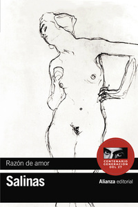
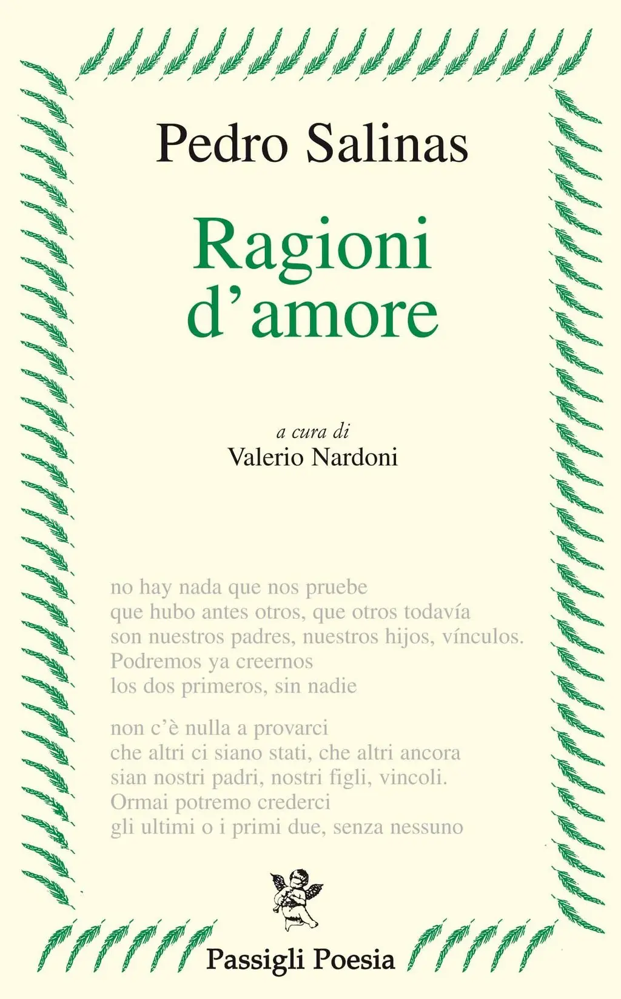

5:54 · 2 OPERE
Pedro Salinas: la ragione nell'amore.
Il filo del discorso
La lettura presenta Pedro Salinas e Razón de amor, poi sviluppa un componimento sull’amore come resistenza alla separazione. Fin dal primo incontro, la possibilità della perdita accompagna il legame; baci, dolore e vicinanza sembrano conquistare spazio al tempo. Il testo sposta il culmine dell’amore dall’incontro alla tenacia con cui si tenta di restare insieme. Nella conclusione anche l’abbraccio appare parte di un congedo più vasto. Il componimento è identificato dall’incipit spagnolo attraverso un riscontro editoriale, distinguendolo dalla raccolta nominata all’inizio.
I libri nel discorso

Razón de amor
Copertina: Alianza Editorial, Bibliotecas de autor, 2022
Edizione autonoma della raccolta poetica Razón de amor, terzo volume delle poesie complete di Pedro Salinas, con prologo di Soledad Salinas de Marichal. Non è l'edizione identificata nel video.
Il segmento 9,74–37,49 introduce Rason de amor di Pedro Salinas e avvia la lettura.
Passaggio 0:09 ↗ · Fonti e libro ↗
¿Serás, amor, un largo adiós que no se acaba?
Identificazione probabile
Copertina: Ragioni d’amore, Passigli Poesia, 2006; a cura di Valerio Nardoni
Copertina della raccolta Ragioni d’amore (Razón de amor), che contiene la poesia identificata dall’incipit ¿Serás, amor, un largo adiós que no se acaba?. Edizione scelta come riferimento iconografico; nessuna edizione è confermata nel video. L’identificazione dell’opera nel video resta probabile.
Nello stesso segmento iniziale il testo si apre con l’amore come lungo addio; seguono l’incontro, il ritardo della separazione, il bacio che respinge il tempo e il congedo finale.
Passaggio 0:09 ↗ · Fonti e libro ↗